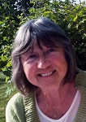
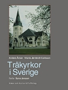
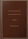

Marta Isabell Järnfeldt-Carlsson
Fil. Dr Konstvetenskap, Universitetslektor, författare.
| Född: | 1937-12-07 Bureå, Skellefteå sn. [1] |
|---|
| Levde: | 1970 Björkå 8, Teg, Umeå kn. [2] | Gifta som Karlsson. |
|---|
| Levde: | 1980 Björkå 8, Teg, Umeå kn. [1] | |
|---|
| Levde: | 2010 Runda Vägen 34 A, Bromma, Stockholm. [3] | |
|---|
Noteringar
Anders Åman är professor i konstvetenskap vid Uppsala universitet. Bland hans tidigare verk kan nämnas Om den offentliga vården (vårdinstitutionernas arkitekturhistoria) 1976 och Arkitektur och ideologi i stalintidens Östeuropa, 1987.
Marta Järnfeldt-Carlsson är universitetslektor vid institutionen för konstvetenskap vid Umeå universitet. 1988 utkom hennes avhandling Landskap, jaktvillkor och kurhotell ¿ arkitektur och turism i Västjämtland 1880¿1915.
Tillsammans var de redaktörer för Bebyggelsehistorisk tidskrift nr 22/91 med temat Övre Norrlands kyrkor.
Tillsammans var de redaktörer för Bebyggelsehistorisk tidskrift nr 22/91 med temat Övre Norrlands kyrkor.
Sune Jonsson (foto) är en av våra stora dokumentärfotografer. Under årens lopp har han i en mängd bildböcker bl?a skildrat den svenska småbrukarens liv och frikyrkors yttre och inre mission, bl?a i Husen vid Himlastigen (1998). 1993 fick han Hasselbladsstiftelsens Internationella fotografpris.
Personhistoria
| Årtal | Ålder | Händelse |
|---|
| 1937 |
|
Födelse 1937-12-07 Bureå, Skellefteå sn [1] |
| 1945 |
7 år |
Brodern Företagsledare Curt Georg Järnfeldt föds 1945-01-24 Bureå, Skellefteå sn [4] |
| 1970 |
|
Levde Göran Fritiof Karlsson 1970 Björkå 8, Teg, Umeå kn [2] |
| 1980 |
|
Levde Göran Fritiof Karlsson 1980 Björkå 8, Teg, Umeå kn [1] |
| 1985 |
47 år |
Fadern Georg Ernst Erland Järnfeldt dör 1985-05-15 S:t Olov fs, Skellefteå stad [5] |
| 1992 |
54 år |
Modern Adele Linnéa Svensson dör 1992-06-28 S:t Olov fs, Skellefteå stad [6] |
| 2010 |
|
Levde Göran Fritiof Karlsson 2010 Runda Vägen 34 A, Bromma, Stockholm [3] |
Källor
| [1] | Mtl Västerbottens län 1981 |
| |
| | |
| [2] | Mtl Västerbottens län 1971 |
| |
| | |
| [3] | www.ratsit.se/sok/avancerat/person, www.hitta.se |
| |
| | |
| [4] | Mtl Stockholms stad och län 1971 |
| |
| | |
| [5] | SPAR 90, RTB 85 |
| |
| | |
| [6] | RTB 92 / SPAR 92 / SPAR 92f / SPAR 95 |
| |
|
|  |
2012. Marta Järnfeldt-Carlsson
Fotot förmedlat av en son 2012-08-21
|
| |
|  |
1999-09. Träkyrkor i Sverige
av Anders Åman | Marta Järnfeldt-Carlsson
Foto: Sune Jonsson
Våra träkyrkor ligger mestadels långt från dagens befolkningscentra. De förmedlar ofta något ombonat och trevligt. Kanske beroende på konstruktionens åskådlighet, kanske på det levande materialet eller på att där inte ekar ens om de är tomma. Med detaljerade fakta och fotografier kompletterade bl?a med akvarellerade arkitektritningar dokumenteras här drygt 20 välbevarade träkyrkor från Hälleviksstrand i söder till Kiruna i norr. Den här boken dokumenterar träkyrkornas arkitekturhistoria, särskilt perioden 1880¿1930. Här ges en översikt över material, byggnadstyper, stilar och traditioner och en jämförelse görs med traditionerna i Norge och Finland.
Den centrala delen i boken är den detaljerade presentationen av ett drygt 20-tal välbevarade träkyrkor, ordnade i tidsföljd efter invigningsår:
Gällivare, Bodum, Åsarna, Gåxsjö, Stensele, Nykyrka, Jokkmokk, Naum, Duved, Bjurbäck, Arvidsjaur, Hälleviksstrand, Kvikkjokk, Hunnebostrand, Håsjö, Ammarnäs, Kiruna, Norsjö, Solberg, Hörken, Edelfors, Dalby, Morjärv.
www.bokliv.se/bok/9789127352483
|
| |
 |
1991. Marta Järnfeldt-Carlsson, Författare till
"Fem kapitel i Maria Wrangels liv"
|
| |
|  |
1989. Författare
Marta Järnfeldt-Carlsson
Duveds kyrka
Volym 37 av Jämtlands kyrkor
Bidragare/Utgivare Jämtlands läns museum, 1989
ISBN 9179480381, 9789179480387
Längd: 16 sidor
|
| |
|
1988. Marta Järnfeldt-Carlsson
Doktorsavhandling
"Landskap, jaktvillor och kurhotell:
arkitektur och turism i Västjämtland, 1880 - 1915 : with an Engl. summary"
Umeå universitet
Humanistiska fakulteten, 1988 - 238 sidor
|
|

{kind=link}
{kind=link}
{kind=link}
{kind=link}